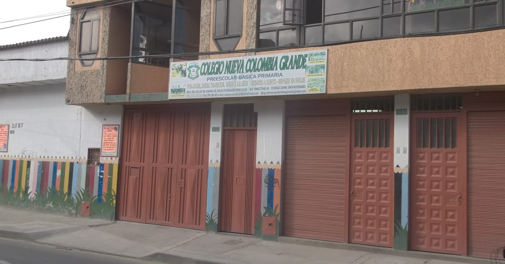
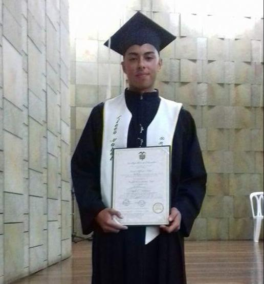
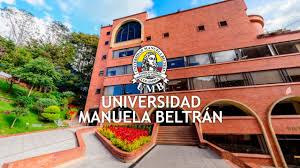
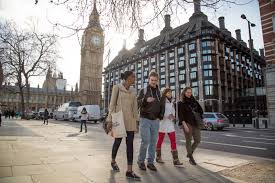

Mi nombre es andres felipe vasquez ortiz, naci el 14 de abril del año 2000 en la ciudad de bogota-colombia. En mi infancia, era un niño muy alegre, tenia muchos amigos y me gustaba mucho jugar, salir a montar bicicleta, ir al parque y practicar diferentes deportes. De pequeño siempre me gustaron mucho los videojuegos y tenia un interes muy grande por los computadores, en el colegio era bueno para la informatica y las matematicas. Curse unos grados de primaria en el colegio nueva colombia grande, luego de eso, continue mis estudios hasta finalizarlos en el colegio Liceo alfredo nobel, alli fue donde conoci a mis mejores amigos y vivi momentos de mi niñez y adolescencia que nunca olvidare. Toda mi vida siempre me ha gustado el campo, con mi papa, viajabamos a la finca de nuestros abuelos, alli me gustaba mucho caminar, ver los animales, interactuar con la naturaleza y hacer oficios varios que normalmente hace un campesino. En mi adolescencia me gustaba mucho salir al parque con mis amigos, montar bicicleta y jugar futbol. Era uno de los mejroes estudiantes, siempre me destacaba por mi excelentes notas, pero habia un problema y es que era un estudiante indisciplinado y tenia problemas de convivencia. Finalmente culmine mis estudios en el año 2016, para ese entonces ya sabia que era lo que queria para mi vida, ser policia, desde niño siempre fue mi sueño y queria lograrlo, pero antes de ello, debia hacer algo muy importante, ser profesional. Mi inclinacion por la tecnologia me llevo a elegir la carrera de Ingenieria de software, no tenia idea de como programar, pero algo si tenia muy claro y era que a mi nada me quedaba grande, todo lo que me proponia, lo lograba. Fue asi, que elegi la Universidad manuela beltran como mi centro de educacion, tenia mucho miedo de enfrentarme a este nuevo mundo, fue un poco complicado al principio, pero me fui adaptando y le fui cogiendo un gusto enorme a lo que hacia y aprendia.
Hola, soy Andres Felipe!
Este es mi sitio web y aqui podras conocer un poco mas acerca de mi...

JARDIN
Colegio Nueva Colombia Grande

PRIMARIA-SECUNDARIA
Colegio Liceo Alfredo Nobel(2016)

UNIVERSIDAD
Ingenieria de Software
Universidad Manuela Beltran(Cursando)

FORMACION COMPLEMENTARIA
Curso de ingles en londres(2018-2/2019-1)